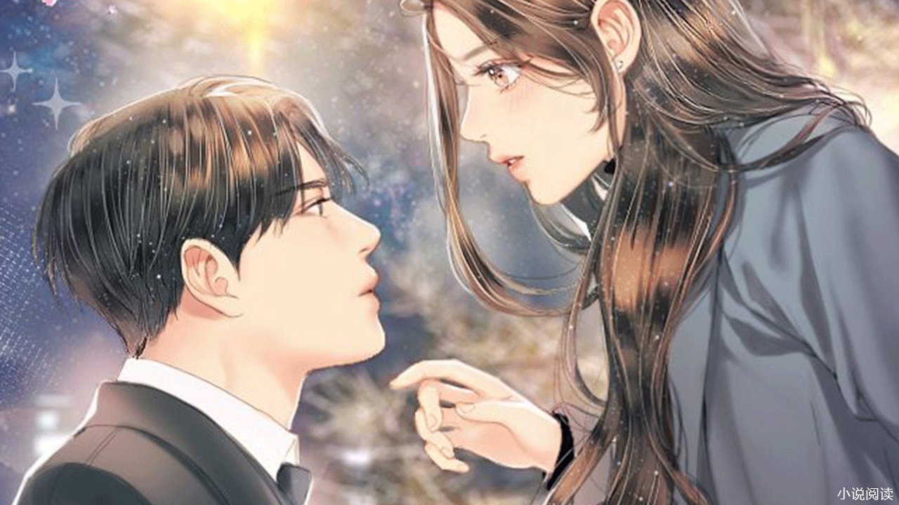

第1章 001初到云城

八月底，日头当空，小镇热浪翻滚。
镇中心卫生院二楼略显破旧的门边懒洋洋地倚着一个女生，她穿着简单的黑白格子衬衫，低头的时候，领口歪了一下。
两个袖子十分不羁的卷起。
在往下是一条低腰牛仔裤，有点旧，因为她的动作，一截清瘦细腻的腰露出来。
样貌惹眼到不行。
护士看到一个男人第三次路过女生时，她递给女生一根棒棒糖，朝病房内努努嘴，“苒苒，你爸妈来了？”
秦苒低头撕开糖衣，长睫微垂，咬进嘴里的时候，她才半眯着眼睛，“是吧。”
护士啧了一声，“看不出来。”
说完一句便拿着病历匆忙离开。
病房里面就是秦苒的亲生爸妈，宁晴和秦汉秋。
两人十几年前就已经离婚，秦苒一直跟着外婆，半个月前外婆生病，眼下需要转院，宁晴跟秦汉秋才回来。
秦苒靠在墙壁上，一只腿微微曲起，面无表情地听着。
隔着门都听出来宁晴的声音冷漠十足，“秦汉秋，我妈情况严重，我带她去云城疗养。”
秦汉秋看向她，不知是讽刺还是其他，目光复杂，“苒苒被学校退学了，宁海镇没学校收她，你正好带她回林家，林家路子多，总会给她找个好学校。”
“我已经带了语儿嫁进了林家，你还要我再带一个拖油瓶？林家人怎么看我？”宁晴有些烦他的胡搅蛮缠，就秦苒那样的，学校想找就能找？
说起这个，秦汉秋怨气明显，“我当初是想带语儿走，你不要苒苒就要推给我？”
他们有两个女儿，秦苒跟秦语，只差一岁，各方面却是天差地别。
两人离婚时为了争取秦语的抚养权，闹得天翻地覆，后来还是秦语自己想要跟着妈妈，这一场官司才算打完。
那时候秦苒没人要，两人互相推脱最后谁也不管。
外婆陈淑兰看着可怜，一个人抚养了秦苒十二年。
病房内，宁晴看着秦汉秋嘲讽的脸庞，心中憋了一口气，比起秦语，谁想要带一个打架斗殴的女儿？尤其还是要带入豪门，动辄就会被人笑话，宁晴心里千百般的不愿意。
秦汉秋是小时候被拐到他们镇上的，一个穷小子，陈淑兰看中了秦汉秋，结婚几年宁晴就受不了秦汉秋的不上进，他除了搬砖就是工地，宁晴干脆离婚。
离婚后宁晴带着秦语嫁到了云城有钱人。
秦汉秋也迅速再婚，跟他现任的老婆还生了一个儿子，日子红火。
秦汉秋光脚的不怕穿鞋的，宁晴怕他到时候真去林家闹，那只会让她更丢脸，只能咽下一口苦水，不甘不愿地带秦苒回云城。
“苒苒，你也”秦汉秋出病房门，看到秦苒，他顿了顿，叹息，“林家有钱，你跟你妈过去，他们铁定能给你找个好学校让你读高三，说不定以后还能考个大学。”
秦苒那成绩能不能考到大学……秦汉秋也就随口一说。
秦汉秋现在要养一个儿子，负担也不小，城里的房子还没买，总要为以后打算。
来之前他现任的妻子就打过招呼，不能把秦苒带回去。
秦苒往后靠了靠，卫生院走廊上没有空调，闷热的空气几乎凝住，她半低头，手指绕着衣领的第二粒白玉般的扣子。
手指纤细，毫无杂质，犹如凝结的玉脂，裹着冷意。
漂亮到不行的眉眼又冷又燥。
她并不理会秦汉秋，解开这粒扣子后，忽然眯了眯眼，朝走廊上正对着自己的窗户看过去，眸子里寒光毕现。
跟窗户隔着几米远的地方是一间办公室。
对面办公室。
坐在椅子上的年轻男人穿着禁欲的白大褂，样貌清隽，身材俊挺。
卫生院最近新来的主任，江东叶。
江东叶看了眼对面与卫生院并不相配的高定沙发。
沙发上躺着一个人，指尖夹着一根烟，修长且分明，淡色的烟雾薄薄升起，手臂随意的搭着，目光似乎凝了半分钟。
江东叶顺着对方的目光朝外看去，“瞅什么呢？”
男人穿着黑色丝质衬衫，窝在沙发上，背靠着沙发，笑，“小腰挺细。”
他侧着头，鼻梁很高，皮肤极白，半眯着眼睛，极长的睫毛遮住眸底，朦朦胧胧的过分疏冷。
似乎是刚清醒，声音低哑偏又带了不经意的清泠。
携裹着几分清绝。
“嗯？”江东叶翻了页病历，没听清。
抬头一看，瞧见这风流韵致的颜色，觉得京城里那些男男女女为这位三爷疯狂，也不是很难理解。
“没你的事儿。”程隽伸直了大长腿，倚在沙发上，轻笑一声，然后开口，“过两天这边任务完了你就回京城。”
“你呢？”江东叶回过神来。
骨节分明的手指将烟按灭在烟灰缸。
程隽起身，两条腿笔直修长，微敛的眸子里氤氲着雾气，他伸手拍了拍衣服上根本就不存在的烟灰，漫不经心的：“有其他任务。”
**
宁家的车就在小镇的卫生院楼下。
是一辆黑色的宝马，挂着云城的车牌号。
宁晴跟医生交涉之后，就直接带秦苒跟陈淑兰回云城。
“林家规矩多，别把你的那些坏习惯带到林家，听到了？”宁晴偏头，揉了下眉心。
秦苒只带了一个黑色背包，将包搭在腿上，半眯着眼有些发困，不在意的点点头。
曲着一双又细又直的腿。
浑身上下一股子混不吝的匪气，也不知道她有没有听进去。
“有这么困？你昨晚做贼去了？”在林家做了十二年的贵妇，宁晴现在举手投足间都是优雅。
她最厌恶的就是秦苒身上与秦汉秋如出一辙的匪气。
秦苒从兜里摸出一副黑色耳机要给自己戴上，不甚在意，“去网吧打了一晚上游戏。”
随着她抬头的动作半挂着的耳机滑到衣领里，搭在脖子上。
“你……你以后不准去网吧！”宁晴看着她这副不务正业的样子，咬牙，“别不服管，你要是拿出语儿的十分之一，我也不用不着对你这么耳提面命。林家不是你外婆家，你的一言一行影响着你妹妹，自己不想好，你也别连累语儿。”
一想到还要去找关系，让林麒把秦苒弄进高三，宁晴愈发烦躁。
以秦苒现在这情况，怕是找遍整个云城，也找不到一个愿意收她的学校。
她当年仗着好样貌嫁给了丧妻的房地产生意人林麒。
秦语小时候就极其聪明，长得好看也讨喜。
成绩优秀，天赋出众，从来没有让林家人为她学习上的事情操过一次心。
不管放在哪儿都是其他人口中的“别人家的孩子”。
林家人对秦语满意的不行。
宁晴带秦语嫁到林家自然是高兴的。
可想想接下来要带着秦苒去林家。
宁晴连中饭都没有胃口去吃。
下午四点，黑色的宝马停在了云城林家别墅前。
“夫人。”开门的是一个穿着蓝色上衣的中年女人，见到宁晴后面的陈淑兰与秦苒，目露诧异。
宁晴胸口有些闷，她心烦意乱，“张嫂，你带我妈跟苒苒进去，语儿要下课了，我去接她。”
秦语一向都是林家的司机接送。
今天宁晴亲自去接，说白了还是烦心，不想在家里对着秦苒，要出去喘口气。
张嫂目送宁晴离开，这才偏头看向两人，目光中透着怀疑。
“老太太，秦小姐，”她上上下下用极其隐晦的眼神扫了两人一眼，才开口，“进来吧。”
说着，当先侧过头在前面带路，在两人看不到的角度，撇了撇嘴角。
陈淑兰一路走过，看到装修精致的欧式建筑。
手指无意识的攥着衣角。
停在大厅门边，张嫂刚要拿出拖鞋。
却看到陈淑兰就这么穿着鞋走进大门。
陈淑兰脚跨进去后，才感觉到张嫂望着她诧异的眼神。
她虽然是乡下人，但一向爱干净，脚上跟衣服上都没什么灰尘。
张嫂的目光如芒在背，可外孙女就在身边，陈淑兰极力忽视张嫂的视线，挺直腰板。
她往回走了一步，想要换鞋，却见张嫂将拖鞋又塞回去了。
林家客房挺多，张嫂摸不准宁晴现在的态度，将两人带到三楼的一间客房。
在二楼拐角处看到一间半敞开的房子，里面摆着的名贵的小提琴露了一个角。
秦苒多看了一眼。
张嫂瞥秦苒一眼，面无表情地道：“那是二小姐的琴房。”
秦苒挑着眉眼，懒懒散散地跟在张嫂身后，漫不经心的想着，看来秦语在林家挺受宠。
楼上的客房挺单调。
“这是洗手间，热水器会用吧？”张嫂打开了卫生间的门介绍，仿佛她对面的两人是山顶洞人。
秦苒坐在矮桌面上，一只腿微微曲起，一手随意拨弄着摆在矮桌上的鲜花，袖子挽了一截。
露出细白的手腕。
“二位先休息，需要什么叫我一声，我就先下楼了。”张嫂说了几句注意事项之后就下楼去厨房帮忙。
她离开后，秦苒锁了门。
陈淑兰看着一尘不染的漂亮房间，略微思索着，好半晌，笑着道：“这位张嫂看起来人挺……挺好相处，以后……你跟你妈，唉。”
秦苒将背包里的东西往桌子上一倒。
闻言挑了下眉，没开口说话。
陈淑兰看着秦苒在摆弄自己的东西，也没打扰她，这个外孙女古里古怪的东西特别多。
上次一起来看到桌子上摆着的反射着寒意的枪，陈淑兰着实被吓到了，不过后来秦苒说那只是一把仿真的玩具枪。
秦苒曲腿坐在桌子上，摆弄着背包里的东西，一台没有标志的笔记本电脑，看起来挺新，也没有牌子，她随手放到桌子上，没去管。
又拿出一个十分厚重的手机。
她继续扔到桌子上。
她东西一向乱，在一堆物品中挑出了一个白色的塑料瓶。
拿起来的时候还发出晃动的声音，里面是水。
外面只用黑色的笔凌乱的画了一个大写的Q，还贴着一张便签。
秦苒将便签撕下来，上面乱七八糟的写了一串字符，旁人看来只是一串乱码，她看了半晌，扔到一边。
手中只拿着白色塑料瓶，偏头看了陈淑兰一眼，纠结了一下还是塞回兜里。
不多一会儿，张嫂上来敲门——
“先生跟大少爷回来了，正在楼下，想要见见二位。”
楼下，林麒跟林锦轩正在低声说话。
毕竟是又要带一个女儿回来，宁晴没有这个胆子擅自做主，在卫生院的时候就给林麒打了电话。
“听说休学了一年，在原来的学校记了大过，是个刺头儿，送进一中有点够呛。”林麒想着宁晴的请求，忧心的拧着眉头。
他原本以为秦语那么乖，她的姐姐也差不到哪里去，当时就没有多问。
眼下倒是麻烦，林家还从来没有出过这般劣迹斑斑的人。
林锦轩眉眼漠然，一手搭在沙发上，歪头按着手机似乎在跟人聊天。
林麒说话的时候，他甚至连头也没抬，对林麒口中的秦苒兴致缺缺。
只是在听到楼梯口动静的时候，他不经意地抬眸瞥一眼。
怔愣住。
小说篇幅有限更多精彩内容关注
微信公众号:青枣读吧
青枣读吧
+ 关注【青枣读吧】按以下操作
↓请按以下提示操作↓
1.点击“复制公众号”
2.打开微信→点击右上角“+”→点击“添加朋友”→选择“公众号”→输入“青枣读吧”→搜索并关注，即可继续阅读哦！